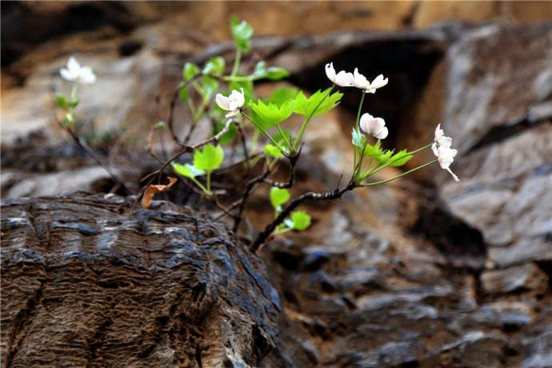

“槭”语轩昂——来自小槭的自我介绍
一、一见钟情——样貌神态。
大家好！我是槭叶铁线莲，你们可以称呼我为“小槭”。
我想问大家一个问题，你们知道我的名字为什么叫“槭叶铁线莲”吗？让我来告诉你吧，是因为我绿油油的叶子和槭树哥哥的树叶相似，像一个伸开的手掌将我莲花般的花朵托起，也就是说我的叶片是五角形的，边缘还有些牙齿印。白色的，或者有时浅粉红色的是我的花萼，不是花瓣哦。
早春时节，我就绽放了，你若愿意到京郊走一走，说不定会看到我和姐妹们竞相开放的场面。我们一般有30厘米-60厘米高，你若是仔细瞧一瞧，定能发现我的踪迹。
二、生命时钟——生长期。
我从小就性子顽强，种子在崖壁落脚，我用尽全力在悬崖石灰岩裂缝中挣扎出来，冒出小小的头，用力呼吸品味着这世间的一切。
从小我就明白，只有逃离舒适圈，才能发现更好的自己。因此，我最美丽的时候——我的花期，也早于其他的小伙伴，相比于温暖安逸，我更追求“冷风中独立”的危险美感。每年的三月中旬，冰雪初融，春寒料峭，万物复苏时节，我就做好了开花的准备；四月初，我就先于其他伙伴，早早地大片盛开了。初开时的我面容青涩，靠近蕊群的地方是清新的嫩绿色，渐渐长大的过程中，5-8片或白色或粉色的花瓣状萼片成就了我美丽优雅的身姿。
我的叶大约也是在四月从老枝顶端抽出，四月中下旬叶子完全长出，到十月金秋，我的叶子就开始枯黄凋落了。相比于一年中较长的叶子生长期，我的盛花期仅能持续一周左右，但是短时间内花与叶的组合使我的生命趋于完整。
木质茎的我一年只能生长一点点，但是我相信生命之美在于质而非量，在于深度而非长度。
三、自报家门——我从哪里来
大家肯定知道我是植物界的一员，具体来说呢，我属于被子植物门的双子叶植物纲的毛茛目 的毛茛科的铁线莲属。虽然我的铁线莲属亲戚大多数分布于中国南方，只有我独自分布在北京的悬崖上，但是我仍然以这个家族为荣。她给予我归属感，让我每次在山崖上望着月亮时，嘴角都会泛起微笑。
然而，关于我的身世，外界还是有一些争议的，《中国植物志》第28 卷根据花与叶簇生这一性状将我置于绣球藤组中，但是我许多形态特征，如直立灌木习性、掌状单叶、花萼的数目与形态等，在绣球藤组中，甚至是在整个铁线莲属中都十分独特，地理分布也和其他伙伴不同。绣球藤组其他伙伴多为大型的木质藤本植物，具有一至二回三出或羽状复叶，多分布于我国西南、日本、欧洲地中海地区，与我距离好远。因此外界常常视我为“异类”。
许多人类学者对我进行了很多研究，北京林业大学的穆林和谢磊两位学者通过系统发育分析法分析了我的系统位置，他们认为我与绣球藤组其他种类并没有很近的亲缘关系，我在属中具有十分孤立的系统位置，他们倾向于把我解释为铁线莲属中分布于北温带古老类群的孑遗种。对于这一结果，我虽然有点难过，觉得自己和亲人们渐行渐远，但是我也更希望人类通过他们的聪明才智，帮助我找到生命的本源。
四、家乡介绍——在中国的分布。
我可是个实打实的北京户口，虽然不是紫禁城里走出来的满嘴京片儿的京城格格，但也是北京郊区山崖上的花仙子，“悬崖上的花仙子”说的就是我呢！我主要居住在北京郊区的山上，但是一般的山，我也住得不习惯，只有岩层是石灰岩的崖壁上你才能见到我的身影。前些年有个人还告诉我，河南太行山的崖壁上有我们家小妹——无裂槭叶铁线莲，可惜的是我常年居住在北京，还没有见过我的小妹。不过别担心，我在北京还是有很多亲人的，毕竟我们铁线莲属可是一个大家族，姐妹们分布在全国各地，光是北京就有10多户近亲远亲，平时我们也相互照拂，逢年过节也愿意串串门。
五、我与人类——价值、危害与保护。
其实，生长在石灰岩的崖壁上是一件很辛苦的事情，我们的种子需要漂泊许久才能找到合适的生活环境，我们的根需要扎得很深才能得到足够得水分，我们的姐妹也随着人类对我们的好奇失去短暂的生命。
人类一直试图将我培育成可以用于园艺的植物，或许是我的天性太不羁，或许是我的生境太苛刻，这些年来，我依旧做我山崖上的精灵，以天为被地为庐。
想一想这么多年最出彩的一次，也已经过去十年之久。十年前北京奥运，我作为北京市特有植物，十分荣幸地被提名奥运花卉，虽然未能有幸成为颁奖仪式上送给运动员的礼花，但仅仅是提名已让我名声远播。那一年应该是我第一次受到广泛的关注。
来山上寻找我们的人类多了起来，我能感受到一些充满善意与疼惜的目光，也能体会到些许自私自利想要将我们占为己有的眼神。尽管如此，看着我的姐妹们逐渐凋零，看着我的孩子们找不到合适的栖息地，有时候，我也会把希望寄托于人类，我多么盼望他们能快一点找到适合我的栽培技术，挽救我们家族人丁稀少的命运；我多么希望人类能用先进的科研水平多研究我们，重视我们，保护我们，让我们的美丽绽放在更加宽广的空间。
我是槭叶铁线莲，自由自在地生长在京郊的悬崖边，早春四月，春寒料峭，风中绽放的最美姿态一定就是我，如果你看到了这篇文章，如果你在野外见到了我的身影，请选择保护，哪怕沉默，至少，我的家族仍然能够有栖息的家园。

 中国植物志>> 第28卷 >> 毛茛科 Ranunculaceae >> 铁线莲属 Clematis
中国植物志>> 第28卷 >> 毛茛科 Ranunculaceae >> 铁线莲属 Clematis